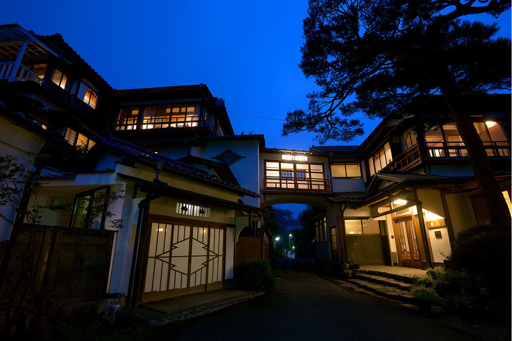
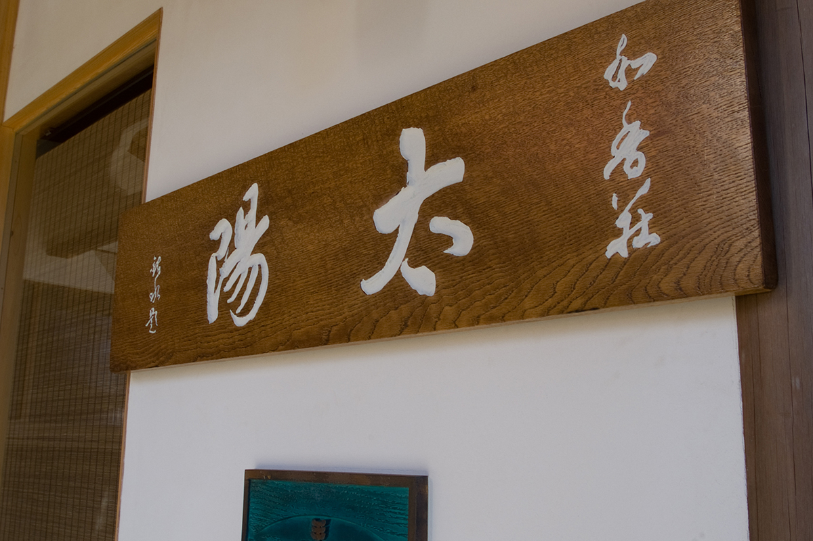
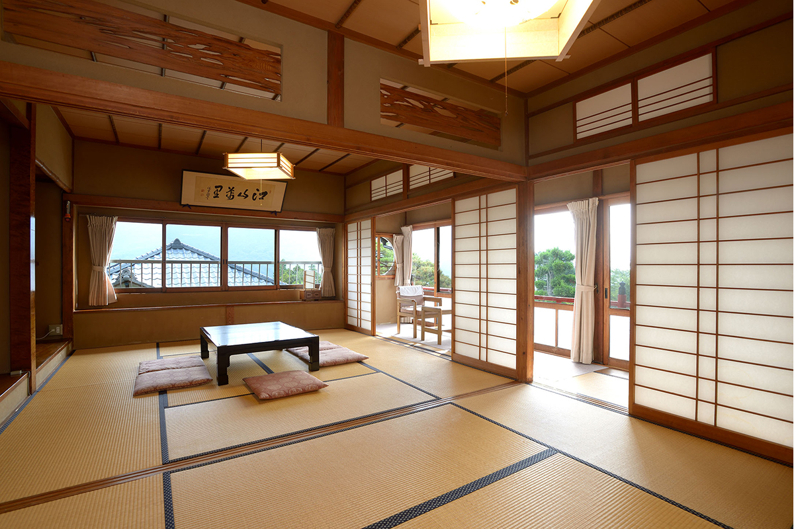
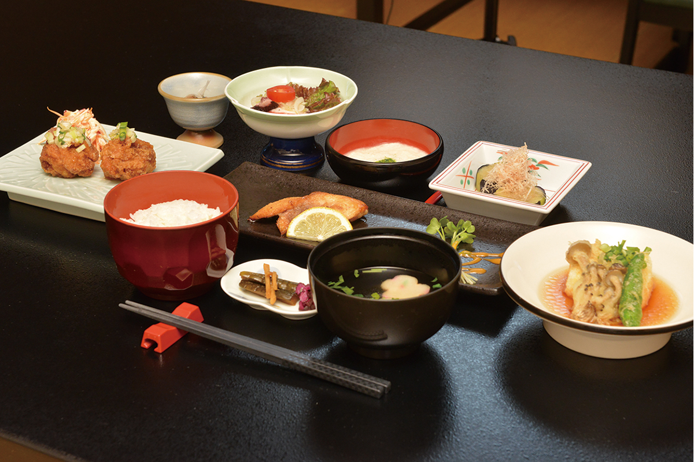
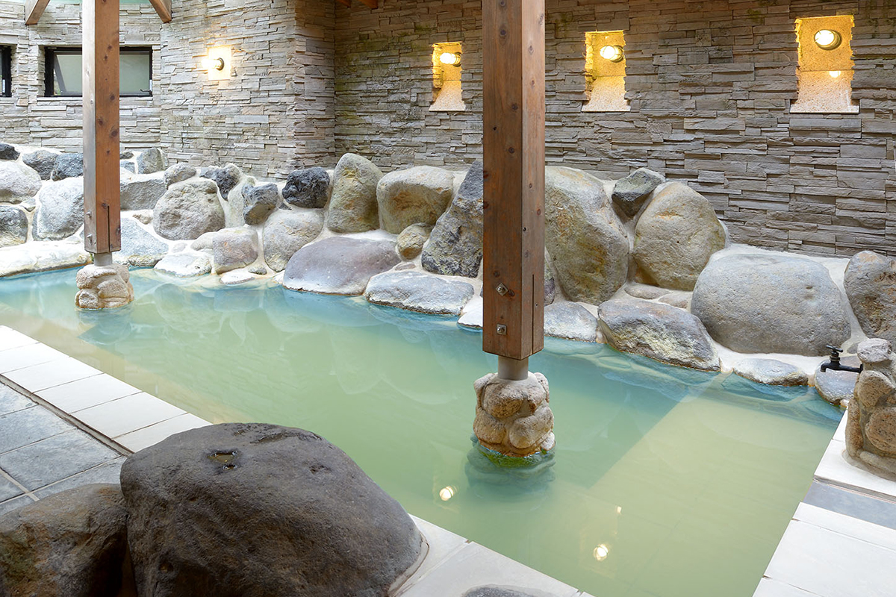
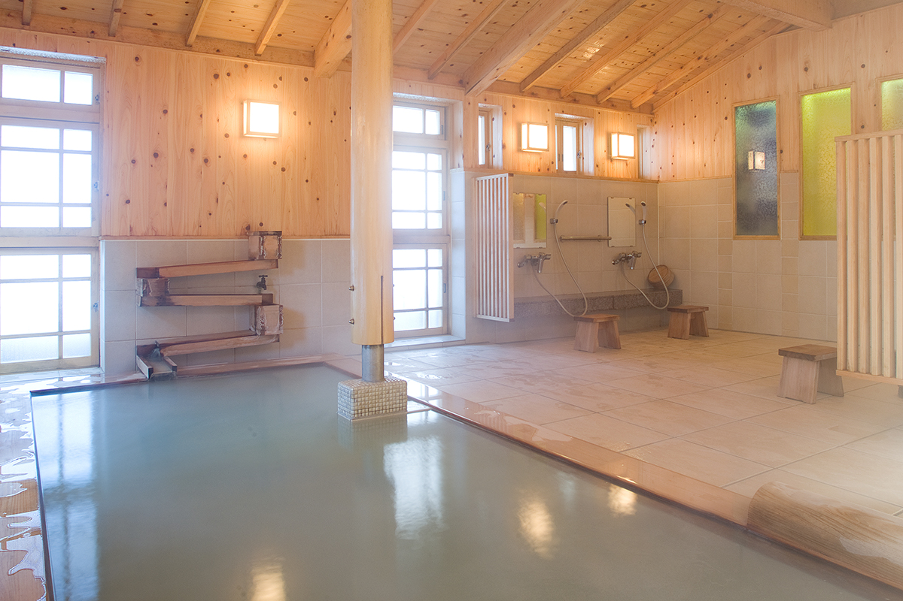
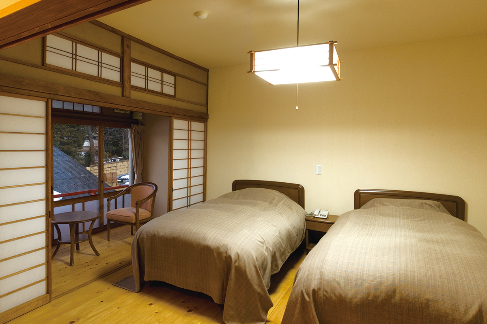

Префектура Канагава · Хаконэ, Гора · где остановиться
Hakone Taiyo Sanso: старая деревянная гостиница в Горе с молочно-зелёным онсэном

Онсэн лучше всего раскрывается, если провести на нём несколько дней подряд: никуда не надо ехать, и целый свободный день можно отдать воде. Исследовательница онсэнов советует для такого отдыха Hakone Taiyo Sanso, небольшую старую гостиницу в Горе, куда легко добраться из Токио.
Дом
Народная гостиница у красного фуникулёра
По крутому склону Горы, курортного посёлка в горах Хаконэ, с грохотом ползёт красный вагончик фуникулёра. Среди этого пейзажа стоит гостиница Hakone Taiyo Sanso, уютная и немного старомодная. Деревянный дом в три этажа внесён в государственный реестр культурных ценностей. Круглые окна и коридоры с отделкой из промытой гальки здесь сохранили, а здание при ремонте укрепили на случай землетрясений.

У входа устроена приёмная в западном стиле, и она очень хороша. В доме висят японские картины и стоят старинные вещи, которые переходили от поколения к поколению хозяев: гостеприимство здесь чувствуется без лишних слов. В эпоху Сёва (1926–1989) дом стал «кокумин сюкуся», народной гостиницей, которую ведут частные хозяева. Когда подходит время еды, по внутреннему радио объявляют, что пора спускаться в столовую на первом этаже, и в этой картине есть что-то успокаивающее.

Футоны в номере гости стелют сами. Неожиданно это оказывается удобно: можно лечь именно тогда, когда захочется.
Ужин
Скромно, но старательно
Еда здесь, по словам хозяев, «не роскошная, но сделанная с большим трудом». На кухне используют несколько видов мисо, а клёцки «синдзё» для супа лепят сами из рыбной пасты, которую покупают в старой лавке в Одаваре.

Онсэн
Две купальни и свежая вода каждый день
Купальни устроены в новом отдельном здании, целиком из японского кипариса хиноки. Две внутренние купальни сделаны по-разному, а мужские и женские часы в них меняются, так что можно побывать в обеих. В современной каменной купальне свет падает через восьмиугольный стеклянный потолок, и мутная молочно-зелёная вода кажется ещё ярче. Деревянная купальня полна пара, в ней пахнет серой и кипарисом.

Воду берут из источника в долине Овакудани и стараются не подогревать и не разбавлять её, а пускать проточной. Стоит присмотреться к тому, как вода попадает в деревянную купальню. Её подают по деревянному жёлобу, уложенному зигзагом. В жару воду пускают сверху понемногу, а в холода подают прямо снизу. Так свежая вода источника раскрывается полностью, и неудивительно, что здешнее обращение с водой называют образцовым.

Температура воды на выходе из источника около 60,6 °C, вода проточная.
Номера
Где остановиться на несколько ночей

Здесь хорошо остаться на несколько ночей и не спеша объехать Хаконэ, например побывать в художественных музеях. В гостинице есть Wi-Fi, кухни, прачечной и трансфера нет. С июня 2026 года гостиница работает с выходными днями без постоянного графика: дни работы указаны в календаре на официальном сайте.
Hakone Taiyo Sanso
- Адрес
- префектура Канагава, Хаконэ, Гора, 1320-375
- Телефон
- +81 460-82-3388
- Цены / Вход
- от 12 250 иен на человека за ночь с ужином и завтраком (с налогом и налогом на онсэн)
- Заезд / выезд
- 15:00 / 10:00
- Сайт
- taiyosanso.com